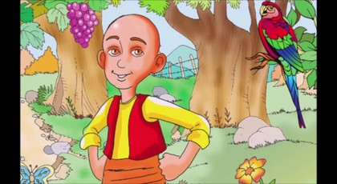

Keloğlan ile Sihirli Kuş

Bir varmış, bir yokmuş. Evvel zaman içinde ülkenin birinde Gülyüz isimli güler yüzlü bir kız yaşarmış. Gülyüz, ülkenin padişahının kızıymış. Bir gün sarayın bahçesinde el işi örerken, görülmemiş güzellikte, gerdanı kınalı, gözleri zümrüt gibi, gagası mercan gibi bir kuş gelmiş ve kızın önündeki güle konmuş. Gözlerini kızın gözlerine dikmiş ve başlamış içli içli ötmeye…
Gülyüz, kuşun ve sesinin güzelliğinden büyülenmiş adeta. O da gözlerini kuştan ayıramamış. Bir süre sonra inci işlemeli ipek mendilini kuşun üstüne atmış. Kuş, mendili kaptığı gibi “pırrr” diye kanat çırpmış ve uçarak gözden kaybolmuş. Kız da arkasından bakakalmış. O günden sonra Gülyüz Sultan, her gün sarayın bahçesine iner, özlem dolu gözlerle kuşu bekler dururmuş. Ama ne çare… Bu göz kamaştırıcı kuş bir daha görünmemiş. Gülyüz Sultan ise kuşu bir türlü aklından çıkaramıyormuş. Kuşun özlemiyle günden güne sararıp solmuş. Padişah, ülkenin dört bir yanına tellallar göndermiş. Kızını iyi eden hekime sandıklar dolusu altın vereceğini ilan etmiş. Ülkenin tüm hekimleri padişah kızının derdine çare bulmaya çalışmışlar ama çare bulamamışlar.
Dağda bayırda aylak aylak gezen bizim Keloğlan da Gülyüz Sultan’ın haberini almış ve “Belki bir faydam dokunur.” diyerek düşmüş yollara. Dağlar aşmış, dereler geçmiş, çıkınındaki azığı tükettiği bir gün, bir garipçe kuş gelmiş. Yorgun kanatlarla bir çalı dibine atmış kendini. Keloğlan sevinmiş, “Kısmetim ayağıma geldi, tutar, kızartır, yerim.” demiş içinden. Usulca sokulmuş kuşun yakınına ve atmış külahını kuşun üstüne. Külahı kaldırınca bir de ne görsün? Kuşun ağzında inci işlemeli ipek bir mendil.
Keloğlan şaşmış kalmış. Bu göz alıcı renklerle bezeli kuşu kesip yemeye kıyamamış. Ağzına su akıtmış ve izleyip yuvasını bulmak için kuşu salıvermiş. Kuş uçmuş, Keloğlan koşmuş; kuş uçmuş, Keloğlan koşmuş. Derelerden sel ile, tepelerden yel ile, gitmiş kuşun ardından başındaki kel ile. Sonunda vara vara cennet gibi bin bir renkli bir bahçeye varmışlar. Kuşu kaybetmiş bahçede ama kendini kaybetmemiş Keloğlan. Bahçeyi seyrederek yürümüş ve altın bir saray çıkmış karşısına. Saraya girmiş. Kimsecikler yokmuş içeride.
Keloğlan şaşkın, “Buranın elbette bir sahibi vardır.” diye geçirmiş içinden. Dönmüş dolaşmış, bir kapıyı açmış. Bir yemek odası görmüş. Sofrada ne isterseniz varmış. Canı çekmiş Keloğlan’ın. Elini uzatıp da bir lokma alacak olmuş: “Yerse önce Murat Şah yer!” diye eline bir kepçe vurmuşlar. Öyle sert vurmuşlar ki kepçeyi Keloğlan’ın eli şişmiş. Fakat ne vuranı görmüş ne de söyleyeni. Korkmuş. “Bu saray perili herhalde.” diye düşünmüş. Tam çıkıp kaçacağı sırada bir kanat sesi gelmiş kulağına. Hemen bir dolaba girip saklanmış. Biraz sonra o gerdanı kınalı, kanadı nakışlı kuş gelmiş. Odanın ortasındaki su dolu altın leğenin içine dalmış. Sudan çıkıp bir silkinmiş ve tüyünü dökmüş, civan gibi bir delikanlı olmuş.
Keloğlan gördüklerine inanamamış. Olanlara akıl erdirmeye çalışırken delikanlı koynundan o inci işlemeli mendili çıkarmış. Hem koklar hem de “Ah sultanım, nerelerdesin? Senin gözlerin de yaşlı mı şimdi?” diye gözyaşlarını silermiş. Bir süre ağlayıp söylendikten sonra yine kuş olmuş “pırrr” diye uçup gitmiş.
Keloğlan’ın ağzı açık kalmış. Hemen dolaptan fırlamış, kendini bu perili saraydan dışarı atmış. Arkasına bile bakmadan oradan kaçmış. Az gitmiş, uz gitmiş, dere tepe düz gitmiş. Derken bir yerlere gelince bakmış ki bir kalabalık. Sokulmuş Keloğlan da “Ne oluyor?” diye. Ülkenin padişahı, kızı Gülyüz Sultan’ın derdine çare bulamamış da buraya bir hamam yaptırmış. Hamamın açılışını yapıyorlarmış. Dört bir yana da haber salmış Padişah:
“Her kimin başından ilginç olay geçmişse gelsin anlatsın, hamamda da bedava yıkansın.”
Keloğlan, başından geçen hikayeyi Padişah’a anlatmış. Padişah:
“Hamamı sana bağışladım. Ne olur bana oranın yerini göster!” diye yalvarmış Keloğlan’a. Keloğlan kabul etmiş ve Gülyüz Sultan’ı da alarak sihirli kuşun sarayına varmak için yola çıkmışlar. Az gitmişler, uz gitmişler, dere tepe düz gitmiş. Sonunda Keloğlan bin bir renkli o sihirli bahçeyi bulmuş. Altın sarayı Gülyüz Sultan’a göstermiş. Tabi sarayın ve bahçenin güzelliği karşısında şaşırmış Gülyüz Sultan.
“Asıl görüp şaşacaklarınız içeride sultanım.” demiş Keloğlan. Keloğlan sarayın kapısında bekleyedursun, Gülyüz Sultan altın saraya girmiş, dolaba saklanmış. Biraz sonra sihirli kuş gelmiş, suya girip çıktıktan sonra silkinmiş, civan yapılı bir genç olmuş. Sultanın mendilini çıkararak “Bu mendili işleyen eller sağ mı? Bir daha sultanımın yüzünü görebilecek miyim?” diye ağlayıp mendille gözyaşlarını silmiş. Kız hemen koşmuş, delikanlının kollarına atılmış. Meğer bu delikanlı da insan soyundanmış. O da bir padişah oğluymuş. Adı da Murat Şah’mış. Nasıl olmuşsa perilerin ağına düşmüş bir gün. Bir daha da kurtulamamış tılsımlarından. Onu seven bir insan eli, eline değinceye dek bozulmamış tılsım. Sultan ona sevgiyle sarılınca tılsım bozulmuş ve periler ülkesinden birlikte kaçmışlar. Kırk gün kırk gece düğün yapmışlar.
Onlar ermiş muradına, aylak gezen Keloğlan da kavuşmuş hamamına.